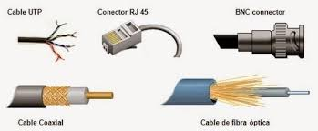
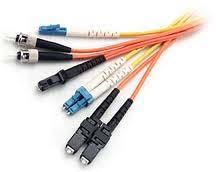

Dentro de los medios guiados, el par trenzado, el cable coaxial y la fibra óptica representan las tecnologías más utilizadas para la transmisión de información. Cada uno ha evolucionado para cubrir diferentes necesidades de comunicación. Tanenbaum destaca que estos medios forman la base de la infraestructura de redes actuales.
El par trenzado es ampliamente usado por su bajo costo y facilidad de instalación, el cable coaxial ofrece mayor protección contra interferencias, y la fibra óptica permite transmitir grandes volúmenes de información a altas velocidades mediante pulsos de luz. Según Keiser y Agrawal, la fibra óptica representa el medio guiado más avanzado debido a su alta capacidad y baja atenuación.

